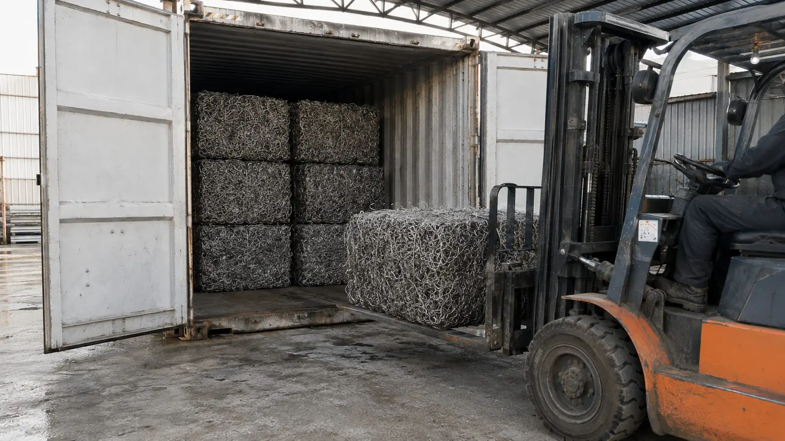
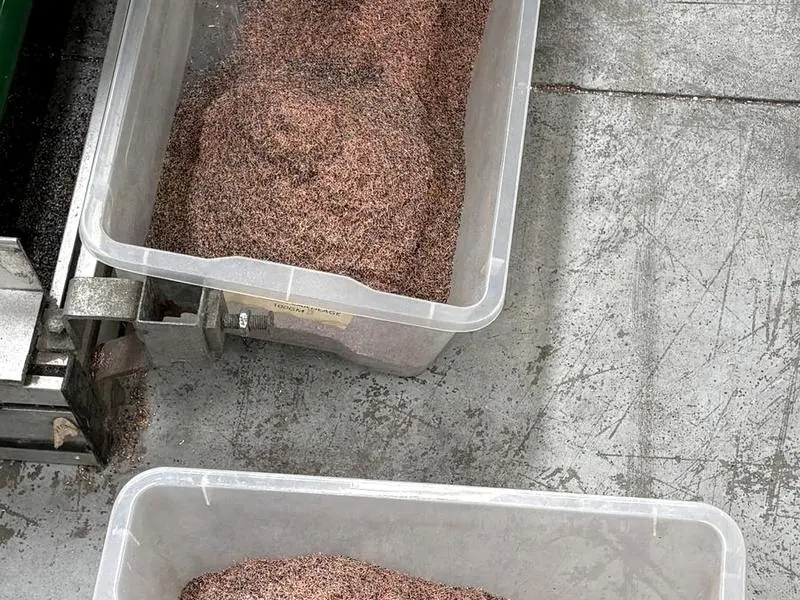

Australian recycled metal · A Recycle Group business
Recycled steel, supplied nationally.
Reforge Metals recovers and processes ferrous and non-ferrous metal at our own facility in Victoria, then supplies it clean, consistent and furnace-ready to mills, foundries, manufacturers and traders in every state — or straight to port for export.
What we do
Recovered here. Processed here. Supplied anywhere in Australia.
Most recycled metal in Australia is collected by one business, sorted by another and sold by a third. Reforge Metals does the whole job from one site — so the buyer knows exactly what they are getting and where it came from.

Recycled steel
High-tensile spring steel recovered from mattresses and processed to around 99% ferrous content. Loose or baled.

Non-ferrous metal
Copper, aluminium, brass and stainless recovered from cable, appliances, e-waste and commercial clearances across the group.

National supply
Dispatched from North Geelong by road, rail or container to mills, foundries, manufacturers and traders in every state — or straight to port.

Why buyers use us
One source. One spec. No surprises.
Buying recycled metal usually means buying uncertainty — mixed loads, unknown origin and contamination that costs you at the furnace. Reforge Metals removes that risk.
- Known origin. Every tonne is recovered and processed at our own facility in Victoria — not aggregated from third parties.
- Clean product. Separated by magnets, vibration, high-volume suction and an electrostatic fibre separator to around 99% free of fabric and foam.
- Consistent supply. Year-round production, not seasonal batches.
- Supplied your way. Loose in bulk, baled for handling, or containerised for export.
- Samples first. Assess the material before you commit to a load.
How it works
From recovered metal to furnace-ready product
Recover
Metal is separated from mattresses, cable, appliances and commercial clearances at the Recycle Group facility in North Geelong.
Separate
Magnets pull the ferrous fraction. Vibration, high-volume suction and an electrostatic separator strip the fabric, foam and fibre.
Check & bale
Material is inspected, then supplied loose or pressed into bales sized to suit handling and freight.
Dispatch
Loaded for road or rail to any Australian buyer, or packed into containers for export.

Recorded and reported
Every load. Four numbers. On the record.
Weighed in. What it was turned into. How much metal was recovered. The carbon that saved. Reforge records all four for every load, and the partner who sent it sees them in their own portal — with a statement they can hand to a board, an auditor or a council.
At scale
A year of Reforge steel
At 130–250 tonnes a month, the line produces 1,560–3,000 tonnes of spring steel a year — every tonne recovered from mattresses that would otherwise have gone to landfill whole.

Part of Recycle Group
Backed by real infrastructure
Reforge Metals is the metals business of Recycle Group — the Victorian resource-recovery group behind The Mattress Recycling Company, Recycle North Geelong and Australia's largest polystyrene plant. The steel we supply exists because the group invested $8.5 million in plant that recovers 99% of the steel from every mattress it processes.
About Reforge MetalsWho we supply
Built for buyers who need volume and consistency
Steel mills & foundries
Clean ferrous feedstock with a known origin and a consistent monthly volume.
Metal traders & exporters
Bulk loose or baled product, containerised at our site and ready for port.
Manufacturers
Recycled steel and non-ferrous inputs for Australian-made products and reporting on recycled content.
Recyclers & councils
A processing partner for ferrous and non-ferrous streams that need a proper end market.
Ready to assess the material?
Tell us what you buy, where you are and roughly how much you need. We will send a sample and the current availability.